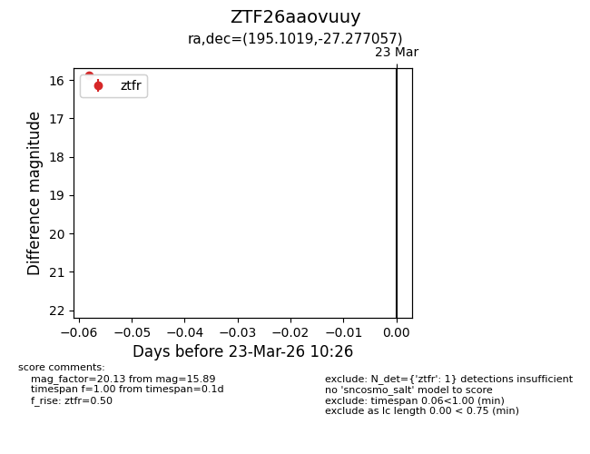
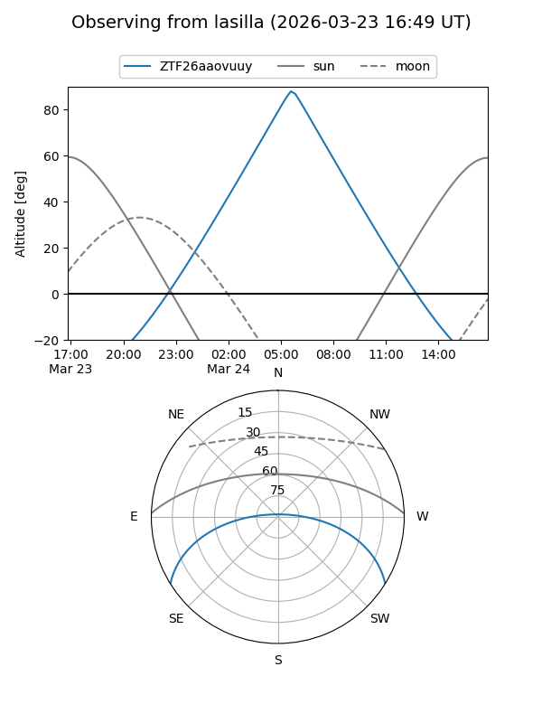
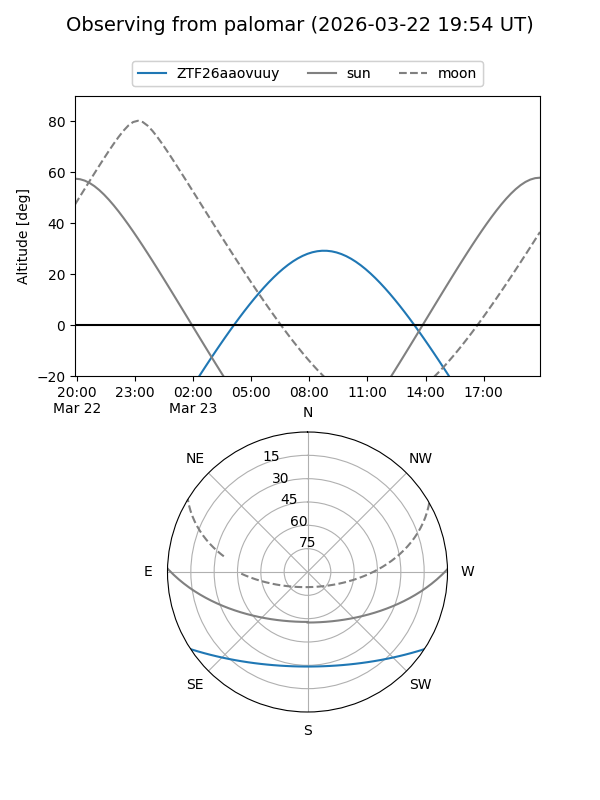

ZTF26aaovuuy
Target ZTF26aaovuuy at 2026-03-23 10:28
Aliases and brokers:
FINK: link
Lasair: link
ALeRCE: link
alt names
ZTF26aaovuuy (ztf,fink_ztf)
Coordinates:
equatorial (ra, dec) = 195.1019,-27.27706
equatorial (HMS+DMS) = 13:00:24.46,-27:16:37.40
galactic (l, b) = (305.3818,+35.55202)
Flags:
Photometry:
last ztfr=15.89
1 ztfr detections
Lightcurve

Visibility


Additional plots